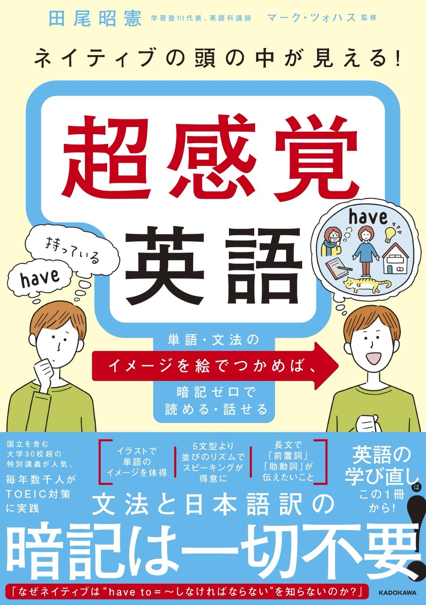

f i t の
ネイティブの
単語・文法の
暗記ゼロで
英語の
※ Amazonの

『ネイティブの
なぜネイティブは
日本語訳を
look
「見る」ではなく、
look after は、
work
本来すべき
働く・勉強する
run
線状の
道が
言語は感覚と
予約特典 配布期間：11/16（月）〜12/2（水）
11/16
特典 1
超感覚英語を
（リアルタイム参加 or アーカイブ視聴）
日時は
特典 2
あなたの
特典 3
海外旅行で
STEP 2
オープンチャットに
予約が
チャット名：予約特典 書籍・田尾昭憲『ネイティブの
STEP 3
Googleフォームに
オープンチャットで
オープンチャットでの
25年前から
塾の
そのたびに、
英語が
学習塾 f i t 代表・英語科講師 田尾 昭憲
2026.9.27
浪人生時代ぶりに
Mさん
英検2級持ってますが、
Iさん
英語が
Nさん
※ 個人の
田尾 昭憲 た
学習塾 f i t 代表、
2004年、
以来
著書：『イメージで
2004年
松山で
20年以上
超感覚英語を
5万人以上
これまでの
Q. 英語が
A. はい。
Q. 特典は
A. ①Amazonで
Q. Kindle版も
A. 特典の
Q. 注文番号は
A. Amazonの
Q. キャンペーン期間の
A. 予約特典は、
予約特典の